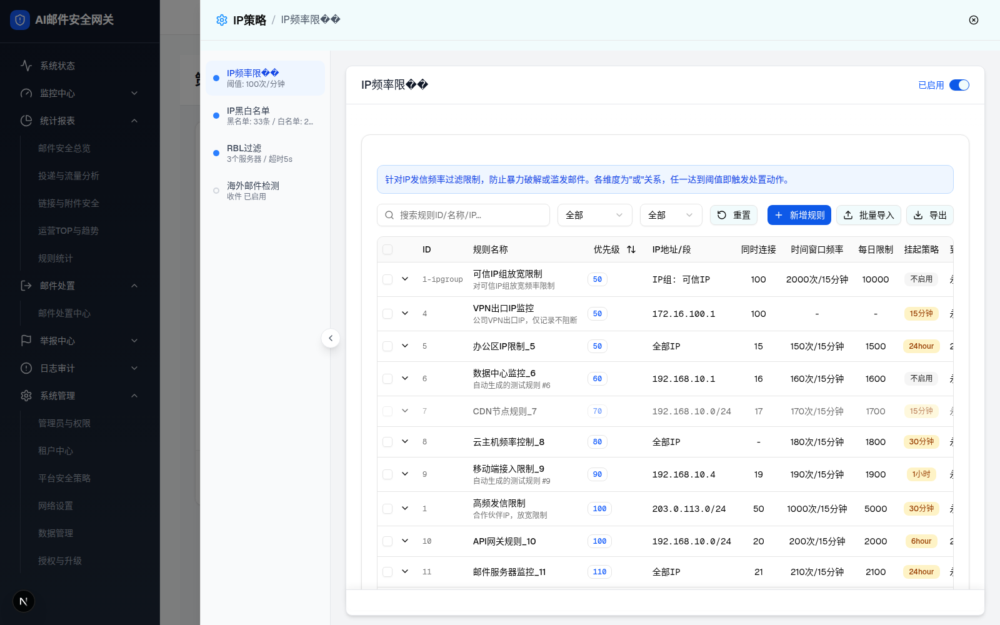
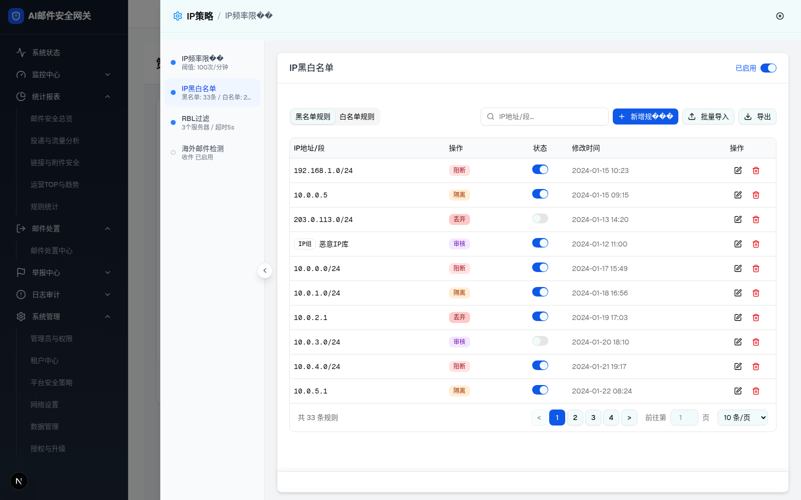
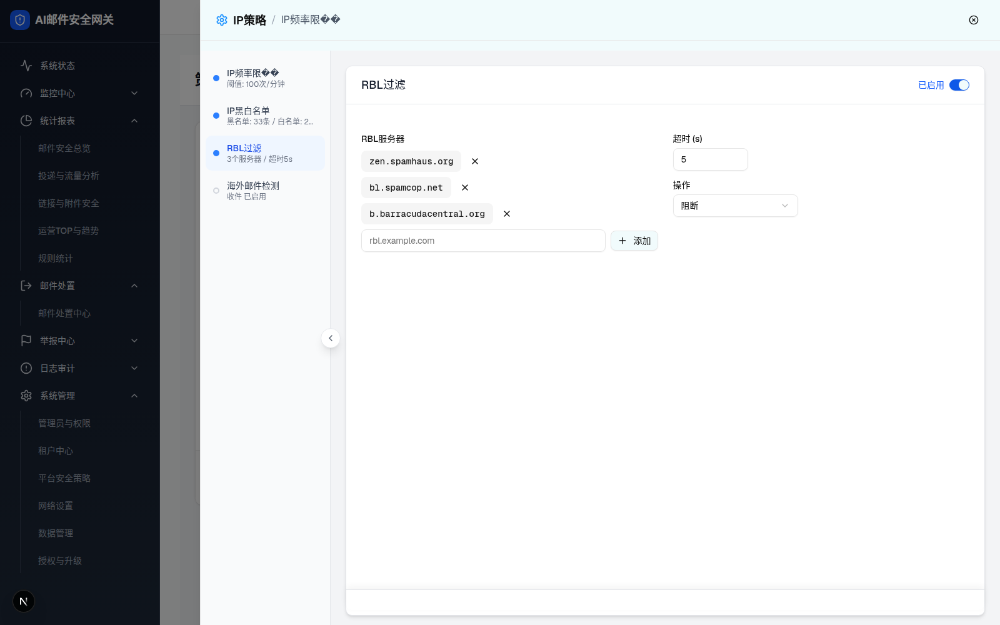
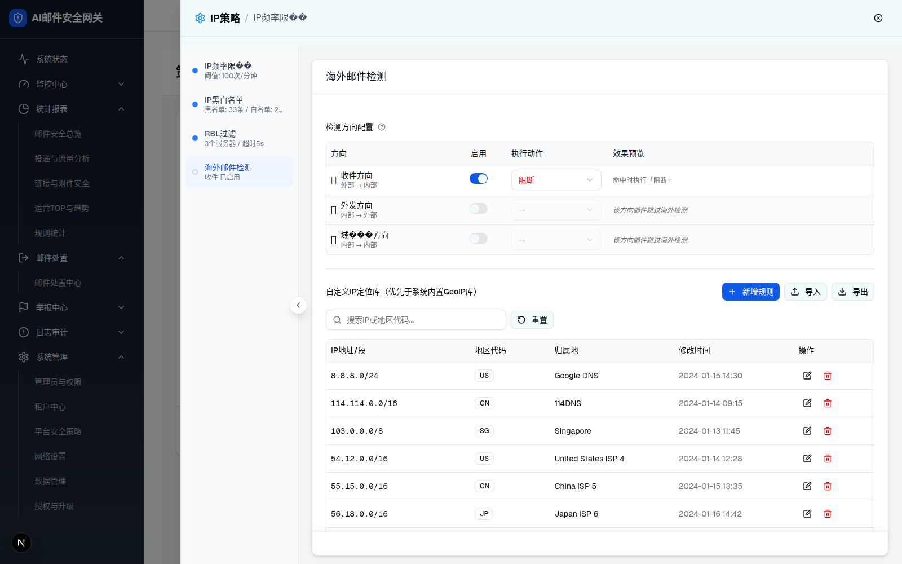

| 所属组件 | 统一阶段抽屉框架 UnifiedStageDrawer（IP 抽屉） |
| 主文件 | index.html |
| 触发路径 | 层级0 IP抽屉已打开 → 点击左侧导航「IP黑白名单 / RBL过滤 / 海外邮件检测」→ switchToPolicy → 右侧内容切换（面包屑不更新，D-004） |
| demo 组件 | connection-layer-page.tsx（embedded 模式，4 模块共用一套左导航） |
👆 点击左侧四个模块，右侧标题+正文实时切换（面包屑固定，如实还原 demo）。

| 元素 | 说明 |
|---|---|
| 模块标题 + 已启用开关 | 右上角 Switch（模块级启停，默认已启用）。⚠️ demo 标题渲染「IP频率限**」（D-003） |
| 说明横幅 | 「针对IP发信频率过滤限制，防止暴力破解或滥发邮件。各维度为"或"关系，任一达到阈值即触发处置动作。」 |
| 工具行 | 搜索(规则ID/名称/IP) · 全部▾ · 全部▾ · 重置 · +新增规则 · ⬆批量导入 · ⬇导出 |
| 规则表格（13 列） | ☐ · ⌄ · ID · 规则名称 · 优先级 · IP地址/段 · 同时连接 · 时间窗口频率 · 每日限制 · 挂起策略 · 到期时间 · 状态 · 操作 |
| 示例行 | 1-ipgroup 可信IP组放宽限制(优先级50, IP组:可信IP, 100, 2000次/15分钟, 10000, 不启用) 等 |
| 比对项 | demo 实际 DOM | 规格记录 | 一致 |
|---|---|---|---|
| 表头列数 | 13（含 checkbox+chevron） | 13 | ✅ |
| 标题文本 | 「IP频率限**」（损坏） | 如实记录+修正说明 | ⚠ 修正 |
| 已启用开关 | 右上，开态(蓝) | 同 | ✅ |

| 元素 | 说明 |
|---|---|
| Tab | 黑名单规则 / 白名单规则 |
| 工具行 | 搜索(IP地址/段) · +新增规则 · ⬆批量导入 · ⬇导出。⚠️ 「新增规则」渲染「新增规**」(D-003) |
| 表格列 | IP地址/段 · 操作[阻断/隔离/丢弃/审核 彩色标签] · 状态[开关] · 修改时间 · 操作[编辑/删除] |
| 示例行 | 192.168.1.0/24 阻断 · 10.0.0.5 隔离 · 203.0.113.0/24 丢弃(禁用) · IP组·恶意IP库 审核 … |
| 分页 | 共 33 条规则，页码 1-4，每页 10 条 |
| 比对项 | demo 实际 DOM | 规格记录 | 一致 |
|---|---|---|---|
| Tab 数 | 2（黑/白名单） | 2 | ✅ |
| 操作标签色 | 阻断红/隔离橙/丢弃红/审核紫 | 同 | ✅ |
| 分页总数 | 共 33 条 | 33（与侧栏副标题「黑名单:33条」一致） | ✅ |
| 面包屑 | 切换后仍「/ IP频率限**」（未更新） | 如实记录 D-004 | ✗ demo 缺陷 |

| 元素 | 说明 |
|---|---|
| 侧栏副标题 | 3个服务器 / 超时5s |
| 内容 | RBL 服务器配置（服务器列表 + 超时/查询设置）；模块级已启用开关 |

| 元素 | 说明 |
|---|---|
| 侧栏副标题 / 圆点 | 收件 已启用；侧栏圆点为灰色（区别于前 3 个蓝点） |
| 首页卡片态 | 该模块在首页为「未配置」橙虚线卡（「去配置」） |
| 内容 | 收件/发件方向的海外邮件检测配置 |
| 比对项 | demo | 规格 | 一致 |
|---|---|---|---|
| 侧栏 4 项圆点 | 前3蓝·海外灰 | 同 | ✅ |
| 模块切换保持外壳 | 头部/侧栏/关闭不变，仅右侧换 | 同（统一框架核心） | ✅ |